自動監看資料夾
指定最多三個資料夾。放進去的檔案自己收進展室，從資料夾拿走就跟著移除，檔案都留在原處。
1這是什麼
圖片、連結、一段話、截圖、檔案。按 ⌘+Shift+C 就收進來，不用選資料夾，也不用取名字。
Wunder 會自己看：圖裡寫了什麼字、拍到什麼、是什麼顏色。所以就算從沒整理過，之後也找得回來。
2有什麼不同
資料夾要你先決定東西放哪，可是收的當下，你還不知道為什麼想留它。結果東西不是哪裡都沒放，就是到處都放。
Wunder 自己分類：依格式、種類、主題、顏色。它也會把舊東西帶回來，收過的不會就這樣躺著。
3怎麼用
在這裡試試：按 ⌘+Shift+C，或點上面的按鍵。
4你會得到
能放什麼
網頁上、相機裡、硬碟裡的都可以，圖裡的字也搜得到。
JPEGPNGHEICWebPGIFTIFFRAWPSD滑鼠停在上面，就在原地播放。
MOVMP4M4V畫成一條能播放的波形。
MP3M4AWAVAIFFFLAC每一頁的字都搜得到。
PDF任何連結都行，還會存一份整頁副本，網站關了也看得到。認得出書、電影、音樂、商品和地點。
URL拷貝的文字變成卡片，記得是從哪裡來的。
TXTRTFHTML選一塊範圍或一個視窗，就收好了。
Control+⌘+Shift+C保留它自己的預覽，用原本的 app 打開。
KeynoteFigmaZIP…展室
依照專案、情境或心情開不同的展室。每個展室有自己的收藏、封面和資料夾：可以自動監看指定的資料夾，新檔案自己收進來；也可以自訂歸檔，把檔案存進展室自己的資料夾。還能用 iCloud 在你的 Mac 之間同步。
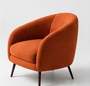
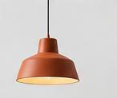

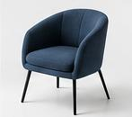
目前


 iCloud
iCloud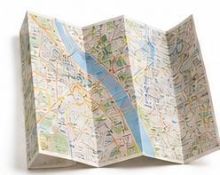

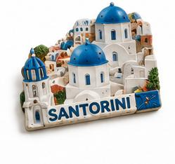


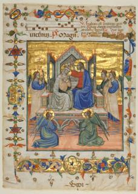
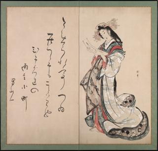
iCloud資料夾
指定最多三個資料夾。放進去的檔案自己收進展室，從資料夾拿走就跟著移除，檔案都留在原處。
想留一份自己的？讓展室開一個專屬資料夾，每件收進來的東西都複製一份存進去，用原本的檔名。
搜尋
格狀、瀑布、時間軸都能看。側欄自己長出格式、分類、主題和顏色。
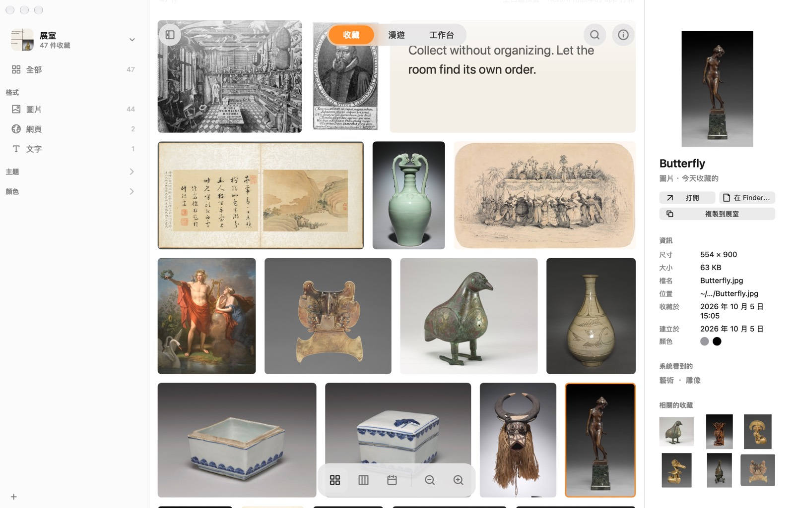
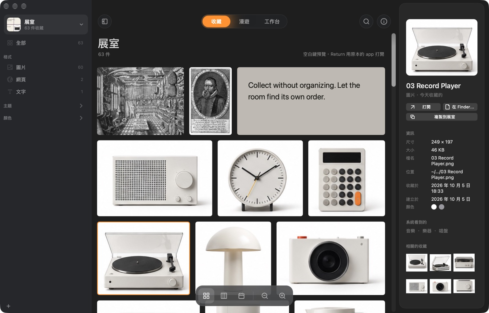
一面會自己慢慢漂的牆。「今天的推薦」每天挑十二件你快忘了的，還告訴你為什麼。
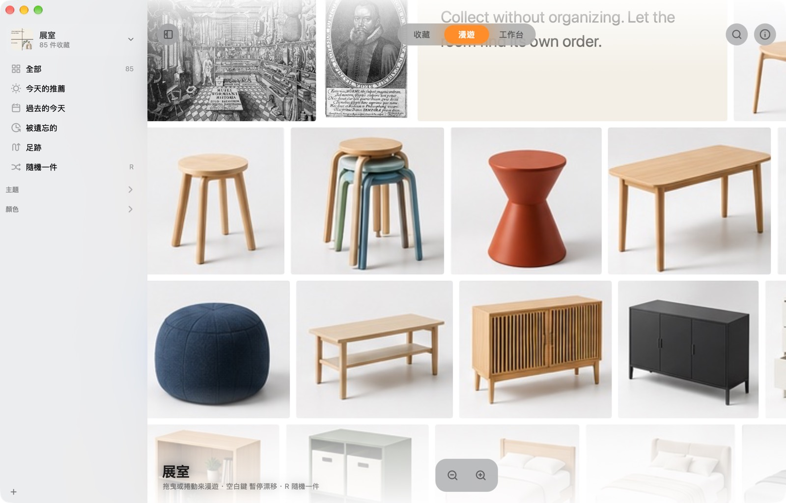
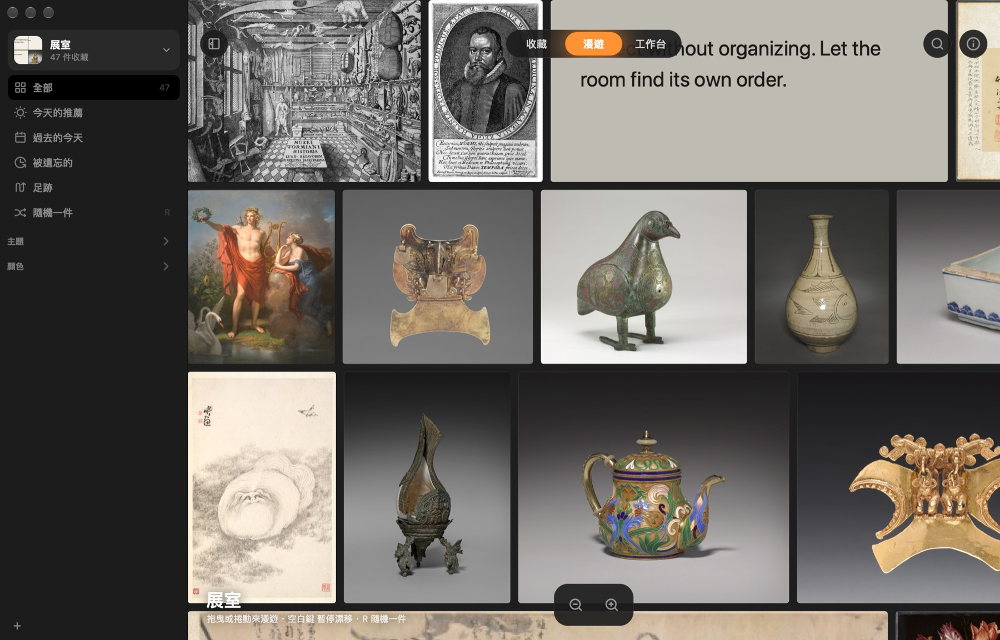
依格式、分類、主題或顏色分堆，拖來拖去、畫線連起來，存三種排法隨時回來。
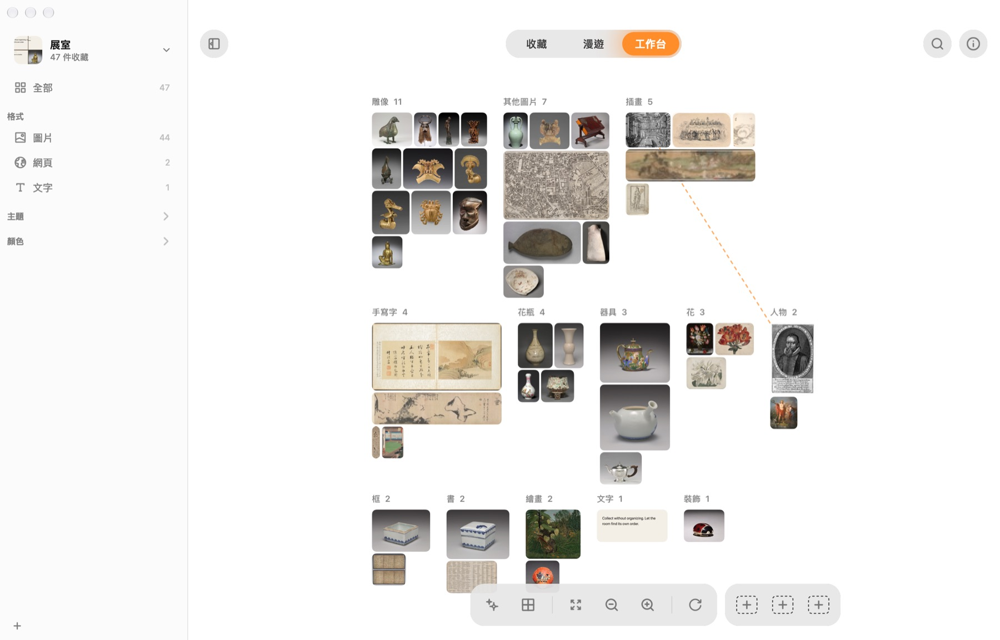
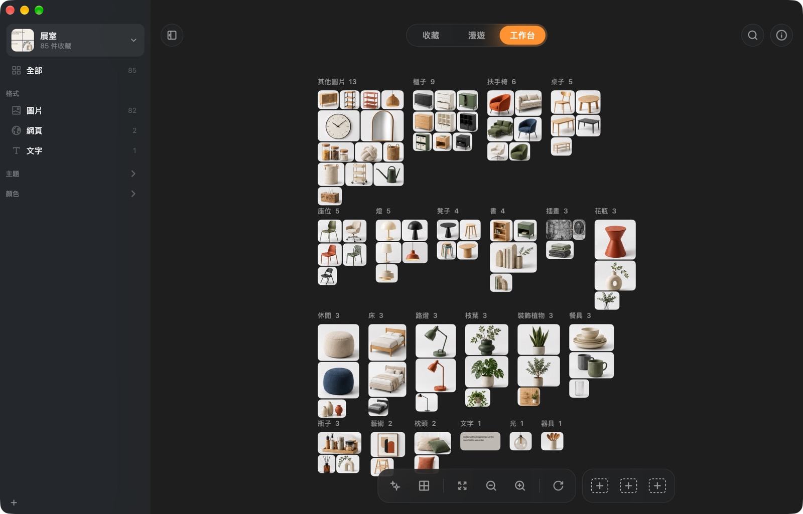
工作台
同一批收藏，依格式、分類、主題或顏色重新分堆。每件東西自己飛到該去的那一堆，隨時都能切回來。
不再是花心力整理，
也不用花錢
| Wunder | Atlas | Eagle | |
|---|---|---|---|
| 價格 | 免費 | US$39 | US$29.95 |
| 自動分類，不用你煩惱資料夾或標籤 | ✓ | – | 要設規則 |
| 用一句話描述就找到圖 | ✓ | – | ✓ |
| 每天把舊東西帶回來 | ✓ | – | – |
| 可以自由擺放的畫布 | ✓ | ✓ | – |
| 所有東西留在你的 Mac 上 | ✓ | ✓ | ✓ |
| 也有 Windows 版 | – | – | ✓ |
依各 app 官網的說明整理，2026 年 10 月。
放在 Mac 上的一個地方，收那些不想弄丟、又不想整理的東西。圖片、網頁、文字、檔案都能收，它會看懂內容，幫你再找回來。
Wunder 還沒經過 Apple 公證，所以第一次會被擋。打開「系統設定 → 隱私權與安全性」，往下捲，按「強制打開」。只要做一次。
也可以在「終端機」執行：xattr -dr com.apple.quarantine /Applications/Wunder.app
不會。讀圖裡的字、認出拍到什麼、顏色、相似的圖、回答問題，全部用 Apple 內建的功能在你的 Mac 上完成。Wunder 只有三種時候會連網：讀取你收的網頁、下載描述搜尋用的模型（約 106 MB，只下載一次，可以不裝），還有檢查新版本。
不會。它記得檔案在哪裡，搬走了也追得到。想留一份備份的話，可以讓展室把每個檔案存進它自己的資料夾。
在展室打開同步，它就搬進 iCloud 雲碟，同一個 Apple 帳號的 Mac 都能打開。兩台同時改也沒關係，兩邊的修改都會留下。
macOS 14 Sonoma 以上的 Mac。對收藏提問需要 Apple Intelligence（macOS 26）。
免費。原始碼在 GitHub。
Mac 版免費下載，不用帳號，不用設定。
下載 Mac 版為什麼做 Wunder
同類的 App 我用過不少，很多其實都不便宜。但用下來就是覺得不好用，而且花最多時間的竟然是整理！
Wunder 你大概也不會天天打開，這樣剛好，它會把你的「珍奇」分門別類擺好掛上牆，哪天想到再打開，就是一個舒服的展室，你就隨意逛逛，不整理也完全沒問題！
@rocavence